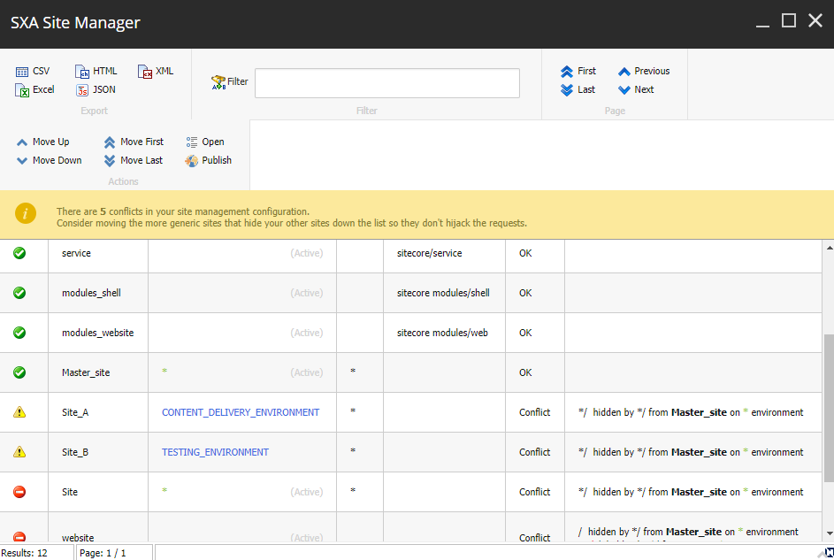
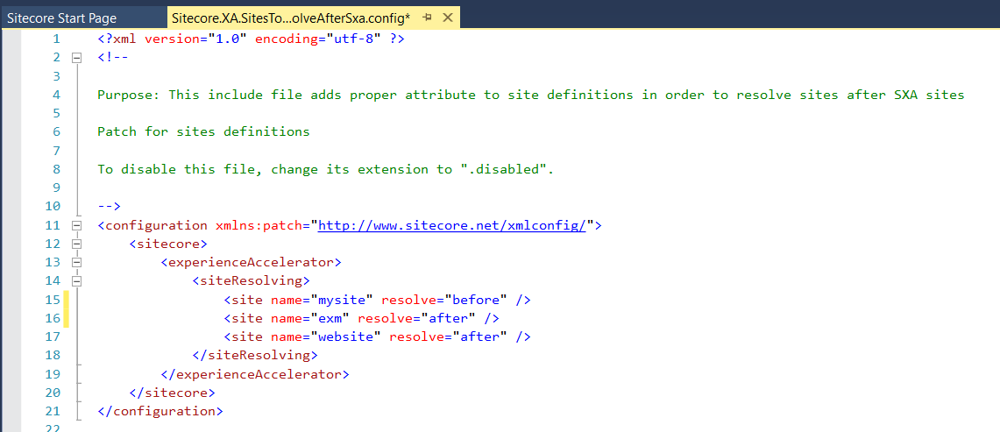
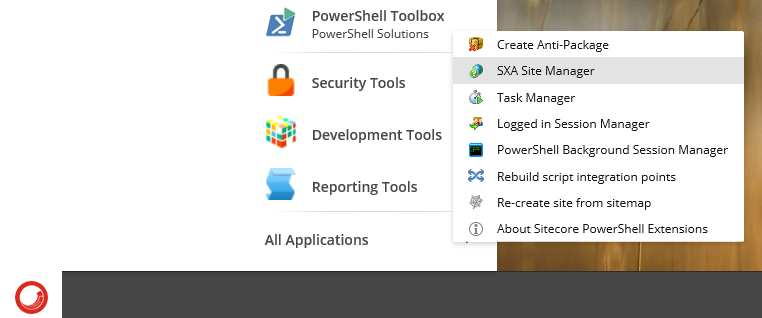
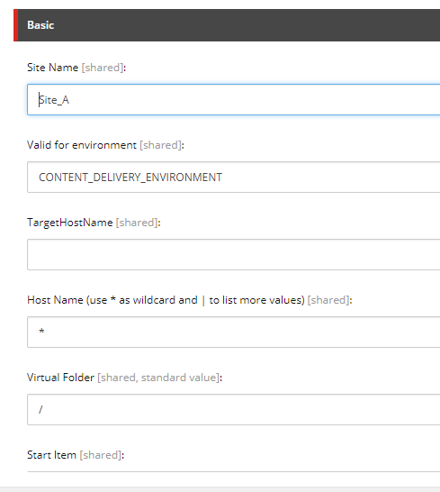
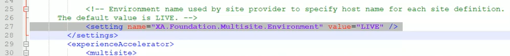
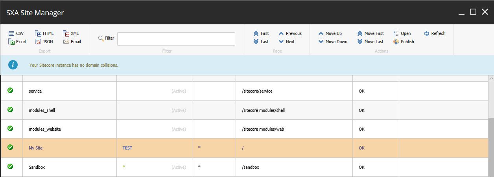

Manage multiple sites with the SXA Site Manager
Resolve site conflicts.
The SXA content architecture includes site collections and sites. SXA supports multiple site collections, which means that you can run multiple sites on a single instance of Sitecore. Each site collection can include multiple related sites, for example, to support multiple brands for a single company or multiple languages or locations for a single brand. By default, a new site has the * (wildcard) host mapping. If multiple sites are using the same host name and virtual folder, some of your sites may not be accessible. To solve this, you use the SXA Site Manager.
The SXA Site Manager dialog box displays a list of all SXA sites on your Sitecore instance. The icons  indicate whether the site can be accessed or whether there is a conflict.
indicate whether the site can be accessed or whether there is a conflict.
Note
The yellow icon can indicate that a site will not resolve on the current environment, but could be accessible on another environment.
If a site cannot be accessed, the Hidden domains column describes what is blocking the site. For example, in the following screenshot the Sub site A is blocked by the Master website because it uses the same host name and a virtual folder.
|  |
Note
In the upper-left corner of the SXA Site Manager dialog box, you can export the contents of the site overview in CSV, Excel, HTML, JSON, and XML.
By default, sites are rendered in the following order: Sitecore sites, SXA sites, EXM sites, other sites.
If your SXA sites are not resolving correctly, because of compatibility with other modules, you can mark other sites to be resolved before or after SXA sites by adding the site name and resolve="before" or resolve="after" to the Sitecore.XA.SitesToResolveAfterSxa.config (App_Config\Modules\SXA\z.Foundation.Overrides)
|  |
To manage multiple sites with the SXA Site Manager:
Click the Sitecore Start button, and from the Powershell Toolbox, click SXA Site Manager.
 In the SXA Site Manager dialog box, to resolve the site conflicts, you can:
Move the site – click the site and on the ribbon, click Move Up.
Note
To select and move multiple sites, press and hold the CTRL key when you select the sites.
Correct the site definition – click the site and on the ribbon, click Open. In the Basic section, change the site name, environment, virtual folder, or the host name.
 The Valid for environment field defines where the site is resolved. Allowed values are empty string, *, or an environment name without blank spaces.
By default, SXA sites are assigned the *, which means that they can be resolved for every environment. If you have this wildcard assigned, the environment name that is defined in the
Sitecore.XA.Foundation.Multisite.configfile is overridden.If the Valid for environment field value is different from the environment name specified in the Multisite config file, your site may not be resolved. The SXA manager dialog will display the environment in blue.

When you have resolved all the conflicts, on the ribbon click Publish.